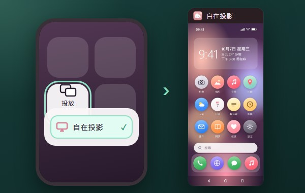
Android 投放Android Cast
手機內建的「投放／Smart View」直接選自在投影。Pick it from the phone's Cast / Smart View tile.
Windows 手機投影・免費開源Phone mirroring for Windows · Free & open source
iPhone、iPad 不用裝 App；Android 還能用滑鼠鍵盤直接操控。錄影、截圖、放大、翻譯，都在同一個視窗裡，資料不離開你家的網路。No app on the iPhone or iPad; drive an Android phone with your mouse and keyboard. Record, capture, zoom and translate in one window, and nothing leaves your home network.
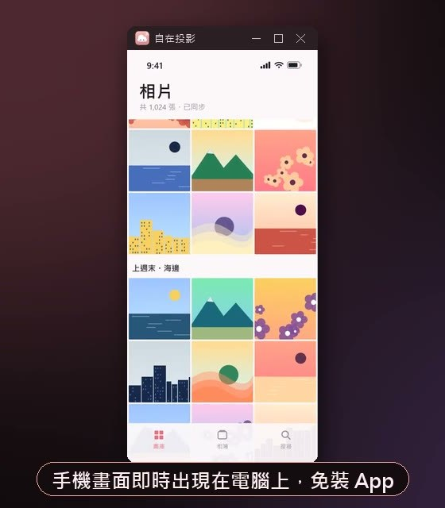

實際畫面：iPhone 的相簿出現在電腦上的自在投影視窗（手機內容為示範用合成畫面）。Real app: an iPhone's Photos in the Zizai Cast window on the PC (synthetic demo content).
能做什麼What it does
四個常見的時刻，自在投影各用一個動作解決。Four everyday moments, each solved in one step.
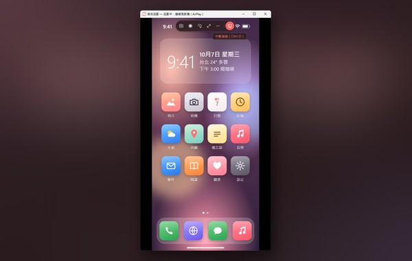
01
iPhone 從控制中心選「螢幕鏡像」，Android 從快速設定選「投放」，畫面和聲音就到了電腦上，再接投影機或大螢幕。手機轉橫向，視窗也跟著轉。
On the iPhone pick Screen Mirroring in Control Center; on Android pick Cast in Quick Settings. Picture and sound arrive on the PC, ready for a projector or big screen. Turn the phone sideways and the window follows.
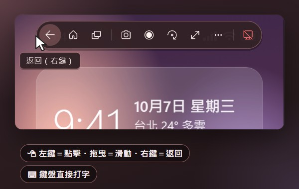
02
Android 開啟「無線偵錯」，掃一次 QR 碼就配對。之後點擊、滑動、捲動、打字都在電腦上完成，右鍵就是返回。
Turn on Wireless debugging on Android and scan a QR code once. Then tap, swipe, scroll and type from the PC; right-click is Back.
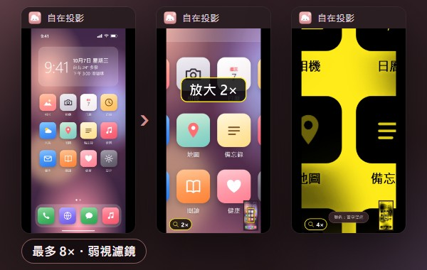
03
放大鏡最多 8 倍，搭配弱視濾鏡（加強對比、黑白、反轉、黃字黑底），還能凍結畫面慢慢看。
Zoom up to 8×, with low-vision colours (more contrast, greyscale, inverted, yellow on black), and freeze the picture to read at your pace.
Ctrl + 滾輪wheel ・ Ctrl + K ・ Ctrl + P
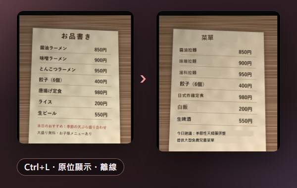
04
按一下，英、日、韓、簡中就翻成繁體中文，譯文直接蓋在原文上；即時翻譯會跟著畫面捲動。文字辨識和翻譯都在電腦上離線執行，不會上傳。
One key and English, Japanese, Korean or Simplified Chinese is translated right over the original; live translation follows the screen as it scrolls. Text recognition and translation run offline on your PC; nothing is uploaded.
Ctrl + L ・圖中菜單為合成的測試圖· the menu is a synthetic test picture
怎麼連線How to connect
開始前Before you start：下載並安裝自在投影（不需要系統管理員權限），手機和電腦連同一個 Wi‑Fi（不是訪客網路）。第一次開啟時 Windows 防火牆詢問，請允許「私人網路」。: download and install Zizai Cast (no admin rights) and put the phone and PC on the same Wi‑Fi (not a guest network). Allow Private networks when Windows Firewall asks the first time.

AirPlay・免裝 App · no app
Miracast
無線偵錯・Android 11 以上Wireless debugging · Android 11+
上圖以 iPhone 為例。忘了怎麼連？程式裡「連接手機 ▸ 怎麼連線？」隨時看得到。The picture shows an iPhone. Forgot how? Connect a phone ▸ How to connect? is always in the app.
功能Features
以下都是程式的實際畫面；手機內容是示範用的合成畫面。All images show the real app; the phone content is a synthetic demo screen.

手機內建的「投放／Smart View」直接選自在投影。Pick it from the phone's Cast / Smart View tile.
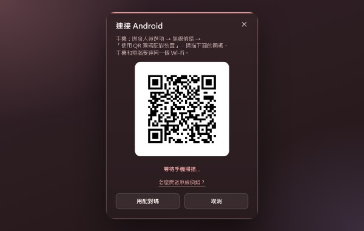
Android 11 以上掃一下就配對，之後自動重連；也可輸入配對碼。Android 11+: scan once, reconnects automatically; a pairing code works too.
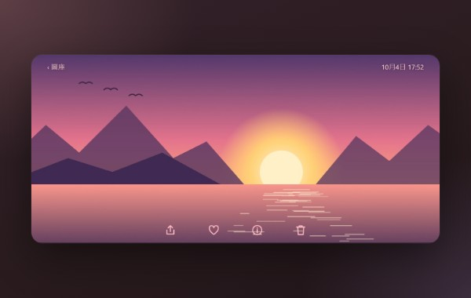
手機轉橫向，視窗自動跟著轉；也能手動旋轉、翻轉。Turn the phone and the window follows; rotate or flip by hand.
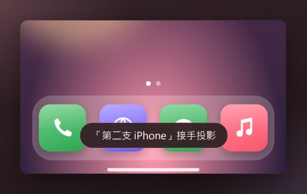
第二支手機連上時，選「換成新的」或「維持原本的」。When a second phone connects: switch to it, or keep the current one.
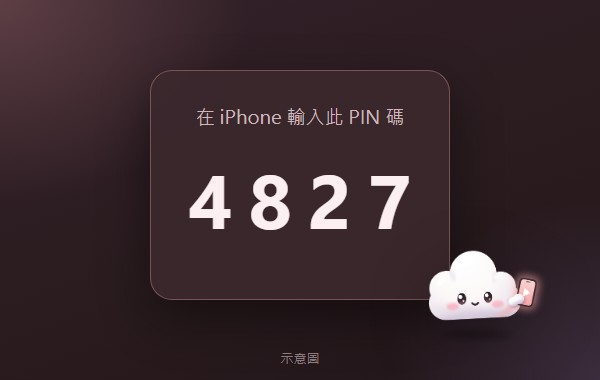
新的 iPhone 要輸入電腦上顯示的 4 位數 PIN（示意圖）。A new iPhone enters the 4-digit PIN shown on the PC (illustration).
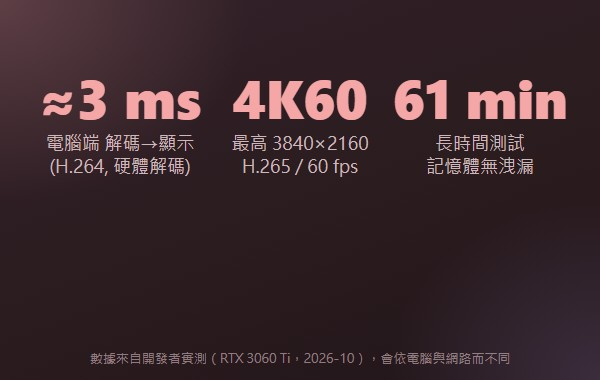
電腦端解碼到顯示約 3 ms（H.264 硬體解碼）。About 3 ms decode → display on the PC (H.264, hardware).
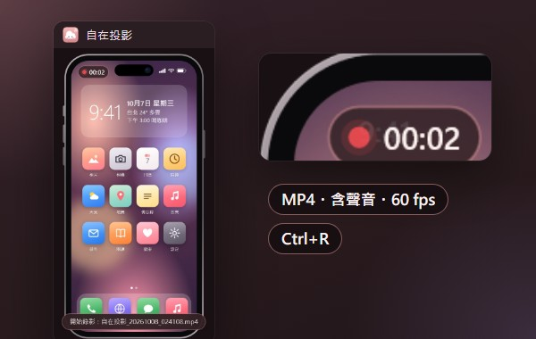
Ctrl+R 錄成 MP4（60 fps、含聲音），斷線時自動存檔。Ctrl+R records MP4 (60 fps, with audio), saved on disconnect.
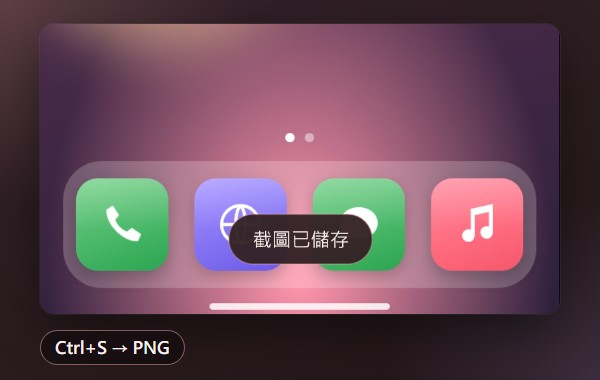
Ctrl+S 存成 PNG；開著外框時連外框一起截。Ctrl+S saves a PNG, with the device frame when it's on.
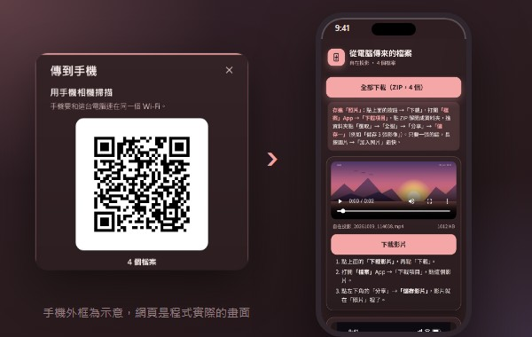
iPhone 掃 QR 碼「全部下載（ZIP）」；Android 直接存入相簿（手機外框為示意）。An iPhone scans a QR code for Download all (ZIP); Android saves straight to the gallery (phone frame drawn).
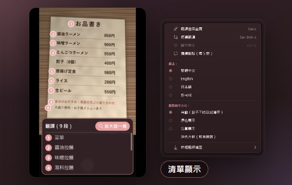
原文標上編號，譯文整理成清單；可切換自動／原位／清單。Numbered marks on the original, translations in a list; or automatic / in place.
日文、韓文用詞更自然。在這台電腦上執行，有獨立顯示卡時加速；需要時再下載（約 1.3 GB，小模型約 560 MB），可隨時刪除。More natural Japanese and Korean. Runs on this PC, faster with a dedicated graphics card; downloaded only if you want it (about 1.3 GB, or 560 MB small), removable any time.
用你自己的 DeepL 或 Azure 金鑰。預設關閉；開啟並同意後，才把辨識出的文字（不含畫面）送出。Bring your own DeepL or Azure key. Off by default; only after you turn it on and agree is the recognised text (never the picture) sent.
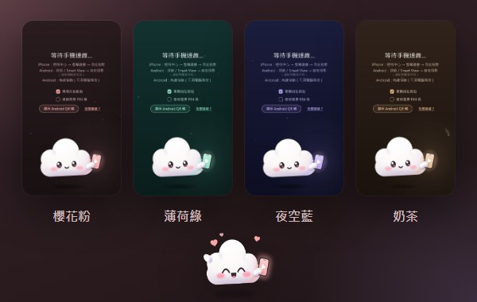
櫻花粉、薄荷綠、夜空藍、奶茶；等待時有雲朵精靈「投投」陪你。Sakura, Mint, Night, Milk tea; Toutou the cloud sprite waits with you.
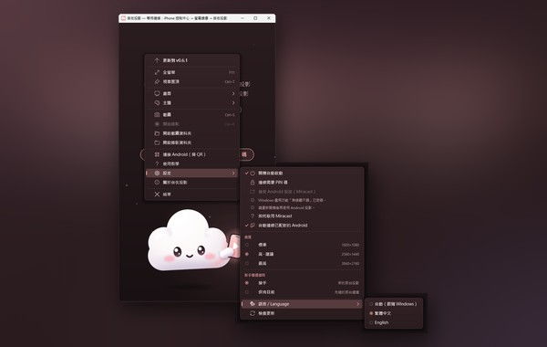
繁體中文・English・日本語・한국어，預設跟隨 Windows。, following Windows by default.
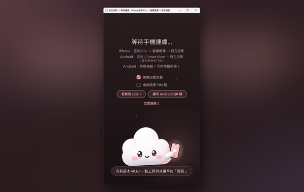
關閉視窗後可在背景等手機；有新版時選「更新到 vX.Y.Z」，不會自己偷偷更新。Keeps waiting for phones in the background; “Update to vX.Y.Z” when there's a new version, never on its own.
0.7.9 新功能New in 0.7.9
譯文固定蓋在原文位置，手機畫面捲動時跟著移動。
Translations stay over the original text and move with it while the screen scrolls.
「連接手機 ▸」第一項就是「怎麼連線？」；按 F1 看快速鍵一覽。
Connect a phone ▸ starts with How to connect?; press F1 for the keyboard shortcuts.
完成提示上可以直接「開啟資料夾」或「傳到手機」。
The notice offers Open folder and Send to phone.
「畫面清晰度」「第二支手機連上時」「背景待命」，一看就知道會發生什麼。
Picture quality, When a second phone connects, Keep running in the background: you know what each one does.
實測Measured
開發者在一台電腦上的實測（RTX 3060 Ti，2026 年 10 月）。整體延遲還包含手機編碼與 Wi‑Fi，會依設備與網路而不同。Developer measurements on one PC (RTX 3060 Ti, October 2026). End-to-end latency also includes the phone's encoder and Wi‑Fi and varies by device and network.
隱私Privacy
畫面、聲音、錄影、截圖都只在你的區域網路和電腦裡。沒有遙測、沒有分析、沒有廣告、不用帳號。Picture, sound, recordings and screenshots stay on your LAN and your PC. No telemetry, no analytics, no ads, no account.
update.json，不帶任何裝置資訊。/download/ 下載安裝程式，並以 SHA-256 驗證。%LOCALAPPDATA%\PhoneMirror\settings.ini 加一行 update_url=。update.json from GitHub, with no device information./download/ and verified with SHA-256.update_url= to %LOCALAPPDATA%\PhoneMirror\settings.ini.完整隱私說明（含每個連線的網址與程式碼位置）Full privacy notes (every address and the source files)
需求與下載Requirements & downloads

| 電腦 | Windows 10 / 11，64 位元 |
|---|---|
| 網路 | 手機和電腦在同一個區域網路（建議 5 GHz Wi‑Fi 或電腦接網路線） |
| iPhone / iPad | 有「螢幕鏡像」即可，免裝 App |
| Android 投放 | 手機支援投放／Smart View；電腦需「無線顯示器」功能與支援的 Wi‑Fi 網卡（Pixel 不支援 Miracast） |
| Android 電腦操控 | Android 11 以上，開啟無線偵錯 |
| 1440p / 4K | 需要「HEVC 影片延伸模組」，沒有時自動用 1080p |
| PC | Windows 10 / 11, 64-bit |
|---|---|
| Network | Phone and PC on the same LAN (5 GHz Wi‑Fi or a wired PC recommended) |
| iPhone / iPad | Screen Mirroring, no app needed |
| Android Cast | Phone with Cast / Smart View; PC with the “Wireless Display” feature and a supporting Wi‑Fi adapter (Pixel phones don't do Miracast) |
| Android control | Android 11+ with Wireless debugging |
| 1440p / 4K | HEVC Video Extensions; otherwise 1080p |
| zizai-setup-latest.exe | Windows 安裝程式（v0.7.9），免系統管理員權限。備用：GitHub Releases。The Windows installer (v0.7.9), no admin rights. Backup: GitHub Releases. |
ZizaiCast-<版本>-source.zip | 該版本的完整原始碼與建置說明（在 Release 頁面）Complete source of that version with build instructions (on the release page) |
ZizaiCast-<版本>-deps-source.zip | 安裝程式內含第三方函式庫的原始碼Sources of the bundled third-party libraries |
netsh wlan show drivers 顯示 Wireless Display Supported: Yes）。不行就改用無線偵錯。netsh wlan show drivers should say Wireless Display Supported: Yes). Otherwise use wireless debugging.授權與原始碼License & source
自在投影依 GNU 通用公共授權條款第 3 版（GPL-3.0）散布。每個版本的完整對應原始碼，都附在與安裝程式相同的 GitHub Release 頁面：
Zizai Cast is distributed under the GNU General Public License version 3 (GPL-3.0). The complete Corresponding Source of every release is attached to the same GitHub release as the installer:
https://github.com/victor900106/ZizaiCast/releases
ZizaiCast-<version>-source.zip
ZizaiCast-<version>-deps-source.zip
第三方元件的授權與著作權聲明見 docs/licenses（含 SOURCE.md 原始碼提供方式）。自在投影建立在 UxPlay、scrcpy、FFmpeg、OpenSSL、Firefox Translations、PaddleOCR、llama.cpp 等開源專案之上。雲朵精靈「投投」是本專案的原創角色。
Third-party licences and notices, and how the source is provided (SOURCE.md): docs/licenses. Zizai Cast is built on UxPlay, scrcpy, FFmpeg, OpenSSL, Firefox Translations, PaddleOCR, llama.cpp and other open-source projects. Toutou the cloud sprite is an original character of this project.

免費、開源、沒有廣告、不用帳號。Free, open source, no ads, no account.